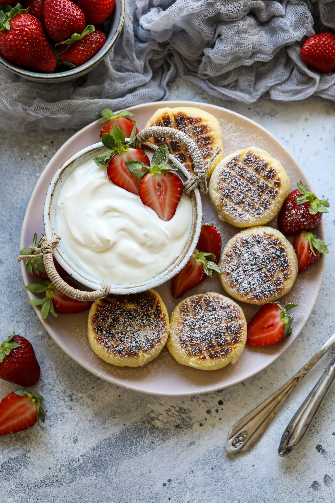

Syrniki is a dessert consisting of fried cottage cheese pancakes that are usually garnished with honey, fruit jam, sour cream, or applesauce. It is part of the Russian (where it's sometimes also called tvorozhniki), Belarusian, Ukrainian, Latvian and Lithuanian cuisine.
Meal prep time : 25 minutes
Servings : 12